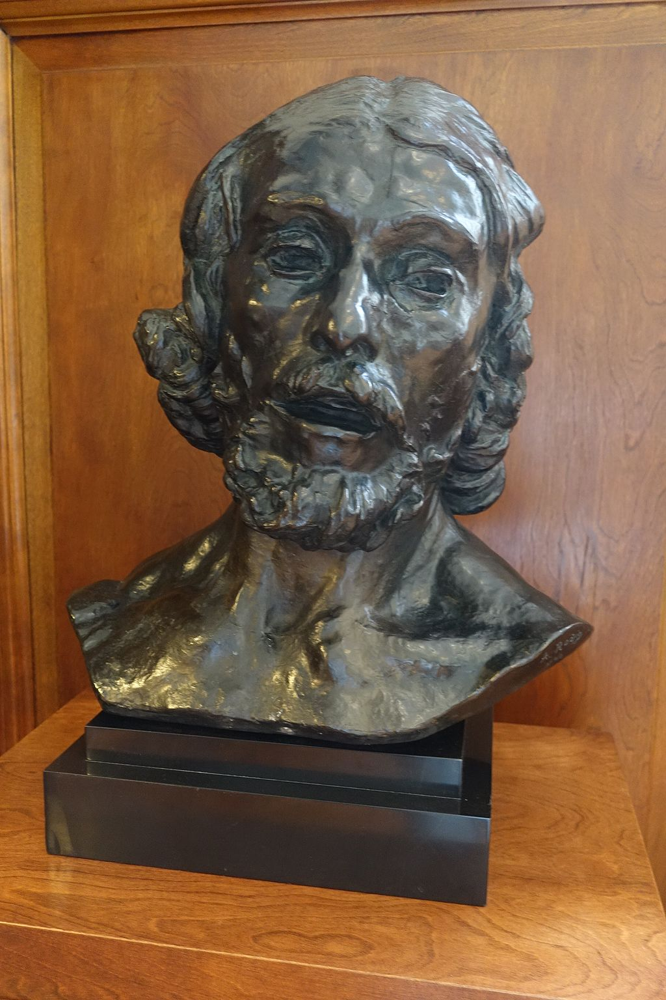

<head>
<meta charset="UTF-8" />
<meta name="keywords" content="drawing, painting" />
<meta name="description" content="drawings by Sunjy" />
<title>Sunjy</title>
<link rel="shortcut icon" type="image/x-icon" href="../../mImages/mCommon/favicon.ico" media="screen" />
<link rel="stylesheet" type="text/css" href="../../mCsses/mCommon/mCssA.css" />
<link rel="stylesheet" type="text/css" href="../../mCsses/mCommon/mCssB.css" />
<link rel="stylesheet" type="text/css" href="../../mCsses/mCommon/mCssC.css" />
<link rel="stylesheet" type="text/css" href="../../mCsses/mCommon/mCssD.css" />
<link rel="stylesheet" type="text/css" href="../../mCsses/mContent/mCssA.css" />
<link rel="stylesheet" type="text/css" href="../../mCsses/mContent/mCssB.css" />
<link rel="stylesheet" type="text/css" href="../../mCsses/mContent/mCssC.css" />
<link rel="stylesheet" type="text/css" href="../../mCsses/mContent/mCssD.css" />
</head>
<script type="text/javascript" src="../../mScripts/mContent/mContentAA.js" /></script>
<script type="text/javascript" src="../../mScripts/mContent/mContentAB.js" /></script>
<script type="text/javascript" src="../../mScripts/mContent/mContentAC.js" /></script>
<script type="text/javascript" src="../../mScripts/mContent/mContentAD.js" /></script>
<script type="text/javascript"></script> 
<script type="text/javascript">
document.write('<div class="mImgAbsolute"></div>');
/*
document.write('<p class="mFontSizeBColor" />From a white paper...</p>');
document.write('<table class="center"><tr><td>');
document.write('');
document.write('</td></tr></table>');
*/
</script>


<script type="text/javascript">
document.write('<p class="mFontSizeBColor" />Colossal Head of Saint John the Baptist </p>');
document.write('<p class="mFontSizeSColor" />“Colossal Head of Saint John the Baptist” was modeled by Auguste Rodin in 1879 and is just one of multiple depictions of Saint John the Baptist’s image in both full-body sculpture and head sculpture.<br><br>Rodin described how the idea of Saint John the Baptist’s was inspired by an Italian peasant offered him his services as a model. Rodin stated:<br><br>“As soon as I saw him, I was filled with admiration; this rough, hairy man expressed violence in his bearing… yet also the mystical character of his race. I immediately thought of a Saint John the Baptist, in other words, a man of nature, a visionary, a believer, a precursor who came to announce one greater than himself. …. I immediately resolved to model what I had seen.” <br><br>Auguste Rodin is generally considered the father of modern sculpture; he possessed a unique ability to model a complex and deeply pocketed surface in clay. Many of his most notable sculptures were criticized during his lifetime. Rodin’s most original work departed from traditional themes of mythology and allegory, he modeled the human body with realism and with personal character and physicality. By 1900, he was a world-renowned artist and remains one of the few sculptors widely known outside the arts community.<br><br>John the Baptist<br><br>John the Baptist was a Jewish preacher in the early first century AD, who is revered as a significant religious figure in Christianity. John used baptism as the central symbol of his movement, and most scholars agree that John baptized Jesus. Some scholars believe that John was influenced by the semi-ascetic Essenes, who practiced rituals corresponding strongly with baptism.<br><br>The Jewish historian Josephus mentions John the Baptist, and according to the New Testament, John anticipated a messianic figure greater than himself. John was sentenced to death and then beheaded by Herod Antipas sometime between 28 and 36 AD. He was beheaded after John rebuked him for divorcing his wife and unlawfully taking the wife of his brother.<br></p>');
document.write('<table class="center" /><tr><td>');
document.write('<br>Rodin described how the idea of Saint John the Baptist’s was inspired by an Italian peasant offered him his services as a model. Rodin stated:<br><br>“As soon as I saw him, I was filled with admiration; this rough, hairy man expressed violence in his bearing… yet also the mystical character of his race. I immediately thought of a Saint John the Baptist, in other words, a man of nature, a visionary, a believer, a precursor who came to announce one greater than himself. …. I immediately resolved to model what I had seen.” <br><br>Auguste Rodin is generally considered the father of modern sculpture; he possessed a unique ability to model a complex and deeply pocketed surface in clay. Many of his most notable sculptures were criticized during his lifetime. Rodin’s most original work departed from traditional themes of mythology and allegory, he modeled the human body with realism and with personal character and physicality. By 1900, he was a world-renowned artist and remains one of the few sculptors widely known outside the arts community.<br><br>John the Baptist<br><br>John the Baptist was a Jewish preacher in the early first century AD, who is revered as a significant religious figure in Christianity. John used baptism as the central symbol of his movement, and most scholars agree that John baptized Jesus. Some scholars believe that John was influenced by the semi-ascetic Essenes, who practiced rituals corresponding strongly with baptism.<br><br>The Jewish historian Josephus mentions John the Baptist, and according to the New Testament, John anticipated a messianic figure greater than himself. John was sentenced to death and then beheaded by Herod Antipas sometime between 28 and 36 AD. He was beheaded after John rebuked him for divorcing his wife and unlawfully taking the wife of his brother.<br>" />');
document.write('</td></tr></table>');
</script>


